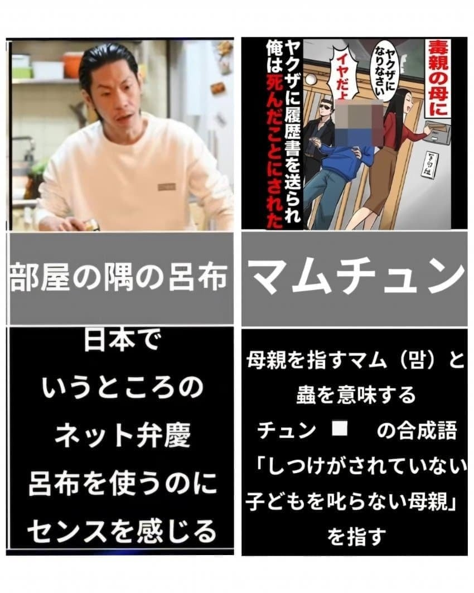
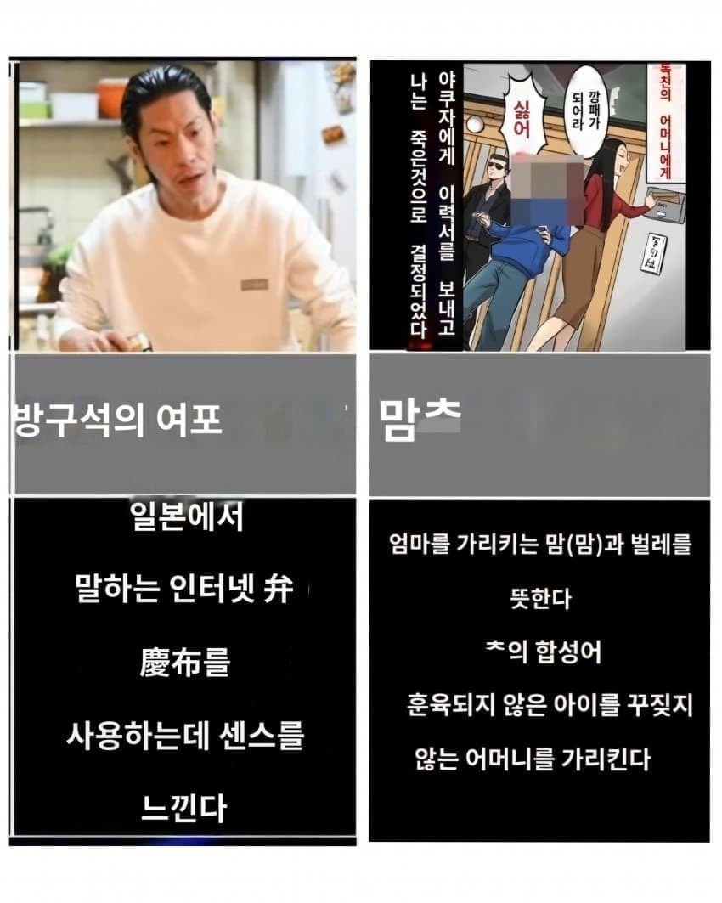

찬열 ㅋㅋㅋㅋ
두쫀쿠발음 힘들어해서 두..두종구 이러는거 기억나네 ㅋㅋ
이런거까지 배우지 말라고 ㅋㅋㅋㅋ
시마초오캐는 섬장개인가? ㅋㅋㅋ
ㄹㅇ 시마초오캐? 이게뭐지하다가 대만인보고 아~섬짱꺠 라고 알아들음
중국ㅉㄱ에다가 앞에 시마(섬)만 붙인건데 번역을 이상하게 했음 ㅋㅋㅋ
카타카나로 시마챤케 제대로 적혀있는데
혜자 창렬은 ㅋㅋㅋ ㄹㅇ 걍 사람 이름인데 입에도 착 붙고 그냥 자연스럽게 자리잡은듯
섬짱까지 배우고 있네 ㅁㅊ ㅋㅋㅋㅋ
시마챵케 ㅋㅋㅋㅋ
커뮤니케이션 장애 ㅋㅋㅋ
시마초오캐ㅋㅋㅋㅋㅋㅋㅋㅋㅋ
시마초오켘ㅋㅋㅋㅋㅋ친탘ㅋㅋㅋㅋㅋ
뭔가했넼ㅋㅋㅋㅋㅋ